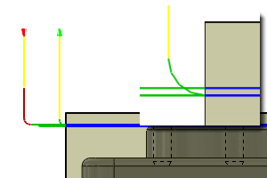

<div id="doFinishingStep"><p>Specifica che deve essere eseguita una fase di finitura</p>
<table class="tipTable" cellspacing="10">
<tr>
<td><center></center></td>
</tr><tr>
<td><center><p><b>Fase di finitura</b></p></center></td>
</tr></table>
</div>